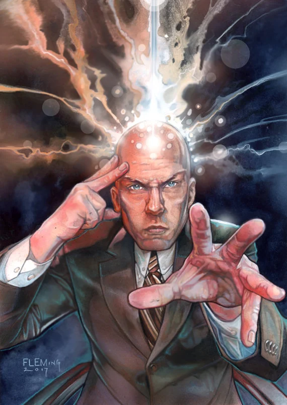
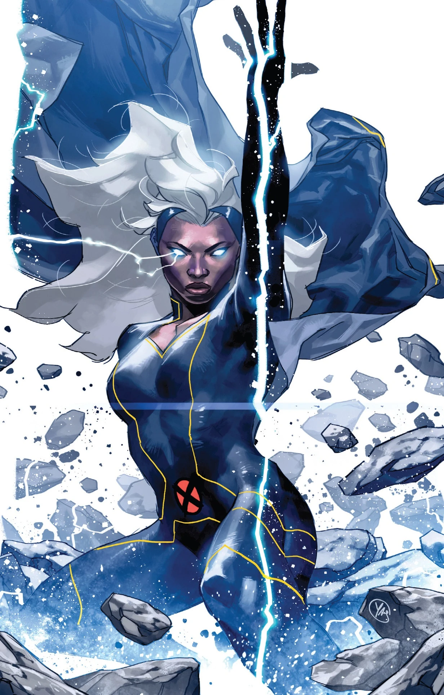
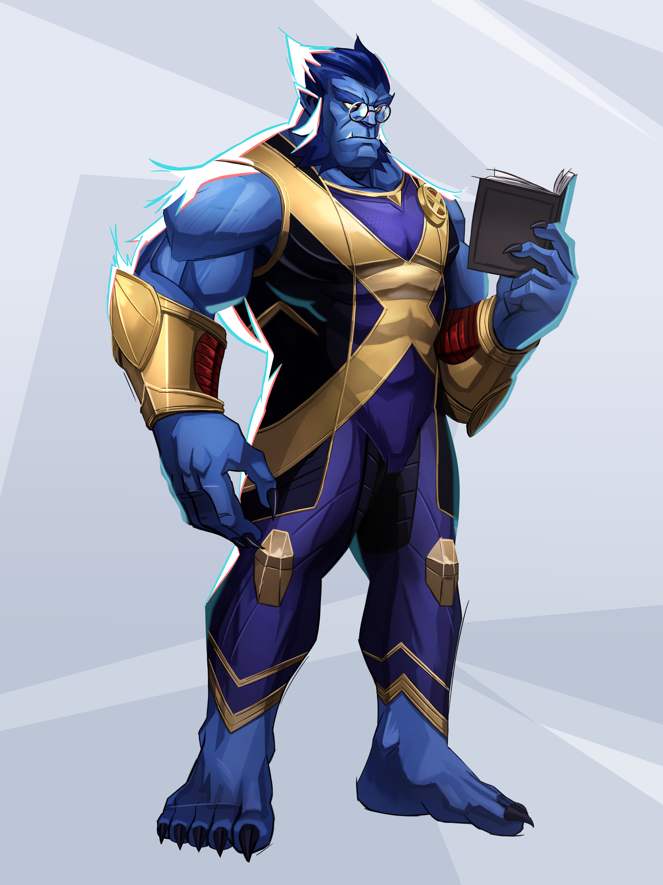

Члени команди X-Men

Professor Xavier
Телепат та засновник школи. Лідер X-Men у боротьбі за мир між людьми та мютантами.
Повний профіль
Cyclops
Боєвий лідер X-Men з лазерним поглядом та невтомною відданістю команді.
Повний профіль
Storm
Контролює погоду та природні стихії. Мудра королева та боєць за справедливість.
Повний профіль
Wolverine
Воїн з кігтями та регенерацією. Жорстокий боєць з суворим минулим та великим серцем.
Повний профіль
Jean Grey
Телекінетик та телепат з феноменом Фенікса. Могутня та співчутлива боєць.
Повний профіль
Beast
Учений та боєць, наділений звіриною силою. Розумний і сильний член команди.
Повний профільПро команду
X-Men - легендарна команда мютантів, заснована професором Чарльзом Ксав'єром. Вони борються за права мютантів та захист миру, незважаючи на упередження суспільства.
Дата заснування: 1963
Лідери: Professor Xavier, Cyclops
Штаб: Xavier School for Gifted Youngsters
Мета: Захист мютантів і людей
Повернутися до команд